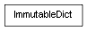

class cymel.pyutils.immutables.ImmutableDict¶

-
class
cymel.pyutils.immutables.ImmutableDict¶ ベースクラス:
dictイミュータブル
dictMethods:
clear()pop(k[,d])If key is not found, d is returned if given, otherwise KeyError is raised popitem()2-tuple; but raise KeyError if D is empty. setdefault(k[,d])update([E, ]**F)If E present and has a .keys() method, does: for k in E: D[k] = E[k] If E present and lacks .keys() method, does: for (k, v) in E: D[k] = v In either case, this is followed by: for k in F: D[k] = F[k] Methods Details:
-
clear() → None. Remove all items from D.¶
-
pop(k[, d]) → v, remove specified key and return the corresponding value.¶ If key is not found, d is returned if given, otherwise KeyError is raised
-
popitem() → (k, v), remove and return some (key, value) pair as a¶ 2-tuple; but raise KeyError if D is empty.
-
setdefault(k[, d]) → D.get(k,d), also set D[k]=d if k not in D¶
-
update([E, ]**F) → None. Update D from dict/iterable E and F.¶ If E present and has a .keys() method, does: for k in E: D[k] = E[k] If E present and lacks .keys() method, does: for (k, v) in E: D[k] = v In either case, this is followed by: for k in F: D[k] = F[k]
-